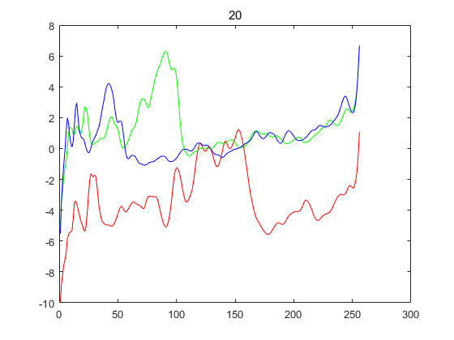
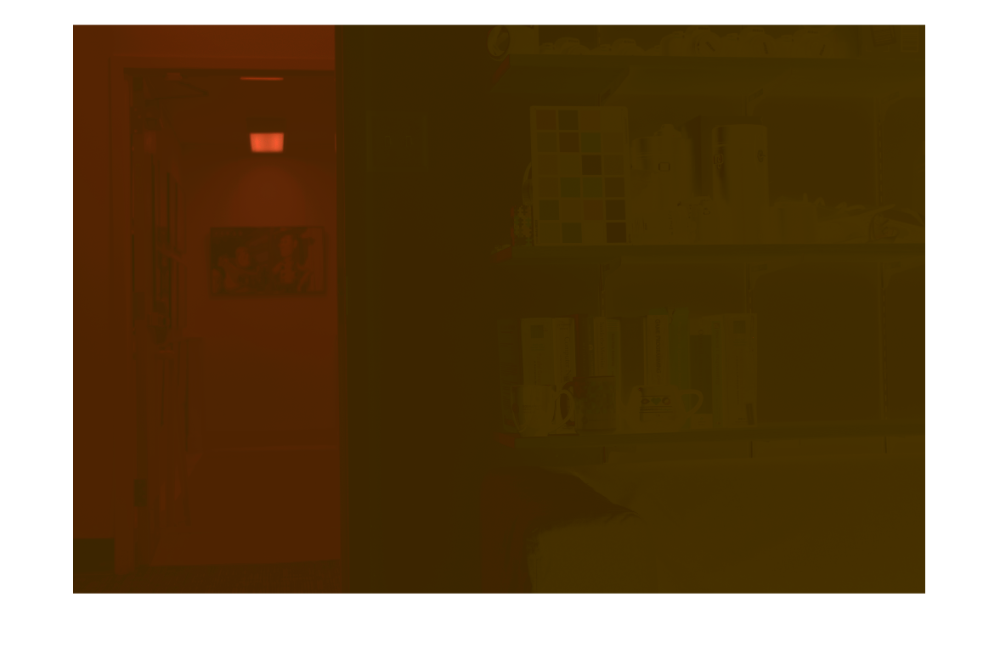
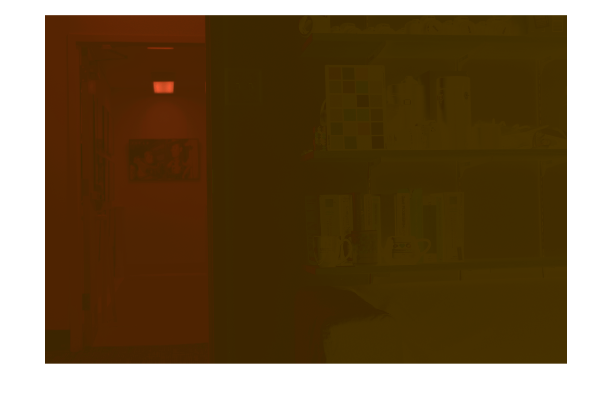

IIT6028 HA#4 Computational Photography LATE DAY: 3
HDR IMAGING & TONEMAPPING
1. HDR IMAGING
Convert the RAW .NEF images into linear 16-bit .TIFF images
I used dcraw tool to convert the RAW .NEF images into linear 16-bit .TIFF images.
First, install dcraw in macOS using homebrew.
$ brew install dcraw
Then, I used following flags to apply given conditions.
condition #1: Do white balancing using the camera's profile for white balancing.-w: Use the white balance specified by the camera. If this is not found, print a warning and use another method. condition #2: Do demosaicing using high-quality interpolation.-q 3: Use Adaptive Homogeneity-Directed (AHD) interpolation. Adaptive Homogeneity-Directed (AHD) somewhat the industry standard. Interpolation selects the direction of interpolation so as to maximize a homogeneity metric, thus typically minimizing color artifacts. It has been implemented in recent versions of dcraw. condition #3: Use sRGB as the output color space.-o 1: Select the output colorspace when the-poption is not used: / 1 sRGB D65 (default) condition #4: linear 16-bit .TIFF images.-T: Write TIFF with metadata instead of PGM/PPM/PAM.-4: Linear 16-bit, same as-6 -W -g 1 1..
So this is final codes:
$ dcraw -w -q 3 -o 1 -T -4 exposure*.nef
It tooks 4 minutes in my macbook pro, and we can get .TIFF files.
1-1. LINEARIZE RENDERED IMAGES
To perform radiometric calibration in order to undo non-linearity.
We cannot use every pixels for calculating recover function f, because it takes too long time and a lot of memory.
So we have to choose several points to calculate recover function f.
First, I choosed it randomly, but it is not good way to apply every features of image.
So I resized image into smaller one(1/60), and use every pixels of it.
If I use .TIFF image, its range is 0-65535, so we have to devide it with 256.
For .JPG image, its range is 0-255, so we don't have to devide it.
I used gsolve function, which is implemented in reference paper.
This is full gsolve code.
I initialized A with sparse function, to solve memory issue.
function [g, lE] = gsolve(Z,B,l,w)
n = 256;
A = sparse(size(Z,1)*size(Z,2)+n+1, n+size(Z,1));
b = zeros(size(A,1),1);
%% Include the data?fitting equations
k = 1;
for i=1:size(Z,1)
for j=1:size(Z,2)
wij = w(Z(i,j)+1);
A(k,Z(i,j)+1) = wij;
A(k,n+i) = -wij;
b(k,1) = wij * B(j);
k = k+1;
end
end
%% Fix the curve by setting its middle value to 0
A(k,129) = 1;
k = k+1;
%% Include the smoothness equations
for i=1:n-2
A(k,i)=l*w(i+1);
A(k,i+1) = -2*l*w(i+1);
A(k,i+2) = l*w(i+1);
k=k+1;
end
%% Solve the system using SVD
x = A\b;
g = x(1:n);
lE = x(n+1:size(x,1));
So we have to initialize Z, B, l, and w.
Z_r = zeros(height*width, k);
for i = 1: height
for j = 1: width
Z_r((i-1)*width + j, :) = img_list(i, j, 1, :);
end
end
B = zeros(k, 1);
for i = 1: k
B(i) = power(2, i-1) / 2048;
end
w = zeros(n,1);
%%%% weighting schemes - tent
for z = 1: n/2
w(z) = z-Zmin-1;
end
for z = n/2+1: n
w(z) = Zmax+1-z;
end
%%%% weighting schemes - uniform
% for z = 1: n
% w(z) = n/2;
% end
And then, we can get several plots by l value.

(above) [1 2 / 3 4] all: weighting scheme - tent & .jpg / 1: l=20 / 2: l=50 / 3: l=100 / 4: l=1000
(above) [1 2 / 3 4] all: weighting scheme - tent & .tiff / 1: l=20 / 2: l=50 / 3: l=100 / 4: l=1000
(above) [1 2 / 3 4] all: weighting scheme - uniform & .jpg / 1: l=20 / 2: l=50 / 3: l=100 / 4: l=1000
(above) [1 2 / 3 4] all: weighting scheme - uniform & .tiff / 1: l=20 / 2: l=50 / 3: l=100 / 4: l=1000
Each case takes almost 60 secs to execute completely.
1-2. MERGE EXPOSURE STACK INTO HDR IMAGE
If I uses full size image, it takes too long time, so I resized it to half size.
First, we have to make image linear using g function which implemented before.
There are two method, exponential and linear one.
%%%% Exponential img_list_r(:,:,:) = exp( g_r(img_list(:, :, 1, :) + 1)/n ); img_list_g(:,:,:) = exp( g_g(img_list(:, :, 2, :) + 1)/n ); img_list_b(:,:,:) = exp( g_b(img_list(:, :, 3, :) + 1)/n ); %%%% Linear % img_list_r(:,:,:) = g_r(img_list(:, :, 1, :) + 1); % img_list_g(:,:,:) = g_g(img_list(:, :, 2, :) + 1); % img_list_b(:,:,:) = g_b(img_list(:, :, 3, :) + 1);
Then, we have to map that img_list_new to range 0-255.
img_list_max = max(max(max(max(img_list_new)))); img_list_min = min(min(min(min(img_list_new)))); img_list_new = img_list_new * 0.998 / (img_list_max-img_list_min) + (0.001*img_list_max - 0.999*img_list_min) / (img_list_max-img_list_min); img_list_new = floor(img_list_new * 256);
Then I made B_img, which is based on B.
B_img = zeros(height, width, ch, k);
for i = 1: height
for j = 1: width
for c = 1: ch
B_img(i, j, c, :) = B(:, 1);
end
end
end
And last, we apply B_img on img_list_new, to make it linear.
It's based on given equation.
img_hdr_u = sum( w(img_list_new+1) .* img_list_new ./ B_img, 4); img_hdr_d = sum( w(img_list_new+1), 4); img_hdr = img_hdr_u ./ img_hdr_d;
For last, we have to mapping it to 0-1 range to visualize it.
We can check all results of each cases.
(above) [1 2] all: .jpg & uniform & exponential / 1: l=20 / 2: l=1000
(above) [1 2] all: .tiff & uniform & exponential / 1: l=20 / 2: l=1000
(above) [1 2] all: .jpg & tent & exponential / 1: l=20 / 2: l=1000
 

(above) [1 2] all: .tiff & tent & exponential / 1: l=20 / 2: l=1000
(above) [1 2] all: .jpg & uniform & linear / 1: l=20 / 2: l=1000
(above) [1 2] all: .tiff & uniform & linear / 1: l=20 / 2: l=1000
(above) [1 2] all: .jpg & tent & linear / 1: l=20 / 2: l=1000
(above) [1 2] all: .tiff & tent & linear / 1: l=20 / 2: l=1000
Each case takes almost 120 secs to execute completely.
2. TONEMAPPING
2-1. PHOTOGRAPHIC TONEMAPPING
I implemented photo_tonemap function to apply tonemapping in HDR image.
function I_HDR_tm = photo_tonemap(K, B, I_HDR)
[height, width, ch] = size(I_HDR);
I_HDR_norm = zeros(height, width, ch);
for i = 1: ch
I_HDR_norm(:,:,i) = I_HDR(:,:,i) * K / exp(mean(mean(log(I_HDR(:,:,i) + 1e-10))));
end
I_white = B * max(max(I_HDR_norm));
I_HDR_tm = I_HDR_norm .* (1 + I_HDR_norm ./ (I_white.*I_white) ./ (1+I_HDR_norm));
end
I tested it with several different K and B values.
And my base environments are .tiff, weighting scheme - tent, exponential, and l=1000.
(above) [1 2] all: .tiff & tent & exponential & l=1000 / 1: K=0.5, B=0.9 / 2: K=0.1, B=0.9
(above) [1 2] all: .tiff & tent & exponential & l=1000 / 1: K=0.5, B=0.5 / 2: K=0.1, B=0.5
(above) [1 2] all: .tiff & tent & exponential & l=1000 / 1: K=0.9, B=0.9 / 2: K=0.1, B=0.95
And this is for .jpg, weighting scheme - uniform, exponential, and l=1000.
(above) [1 2] all: .tiff & tent & exponential & l=1000 / 1: K=0.1, B=0.9 / 2: K=0.5, B=0.9
(above) [1 2] all: .tiff & tent & exponential & l=1000 / 1: K=0.5, B=0.5 / 2: K=0.1, B=0.5

(above) [1 2] all: .tiff & tent & exponential & l=1000 / 1: K=0.2, B=0.9 / 2: K=0.15, B=0.85
I couldn't complete this project. :/
You can check full matlab codes in GitHub Repo.
Copyright 2018. PJunhyuk. All rights reserved.